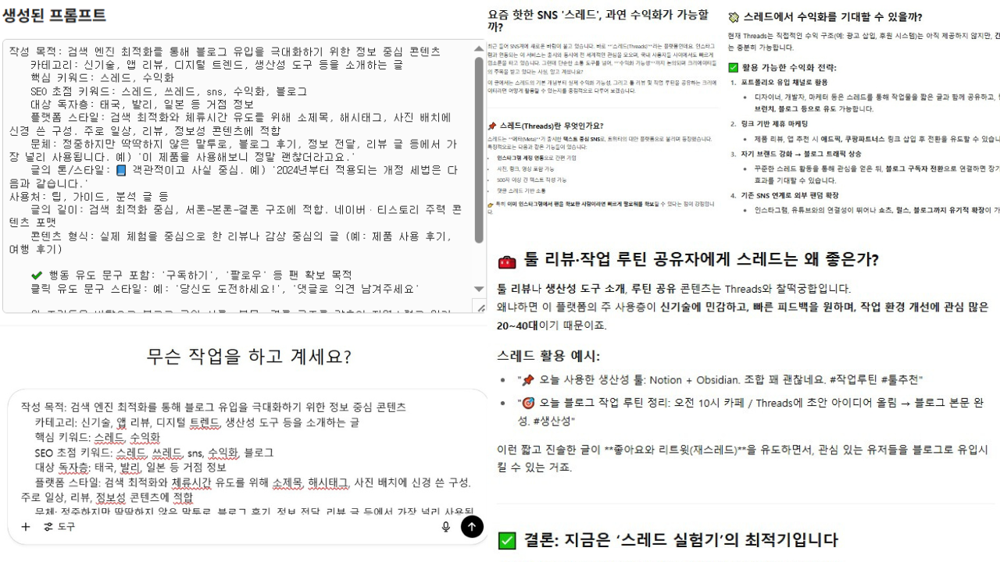

이 웹버전은 블로그 초보자부터 마케터까지 누구나 활용할 수 있는 무료 프롬프트 생성 도구입니다.
블로그 주제와 목표 독자, 톤앤매너만 선택해도, 자연스럽고 설득력 있는 문장 구조가 자동 생성됩니다.
총 수백만 가지 이상의 조합이 가능하며, 실제 생성된 프롬프트는 ChatGPT, Claude, Gemini, Notion AI, Copy.ai 등 다양한 글쓰기 AI에 바로 복사·붙여넣기하여 사용할 수 있습니다.
SEO 키워드 자동 포함, 스토리텔링 구조, 감정 호소 방식 등 실전형 콘텐츠 마케팅에 최적화된 프롬프트 기능은 지속 업데이트 중입니다.

| *랜덤 생성 시 간혹 톤과 문체가 일치하지 않을 수 있습니다.
| *작성 목적, 독자층, 플랫폼 스타일이 서로 논리적으로 맞는 조합이어야 합니다.
| *ChatGPT 결과가 만족스럽지 않을 경우, Gemini, Claude 등도 시도해보세요.
| *생성된 글을 블로그에 업로드할 때의 책임은 사용자 본인에게 있습니다.